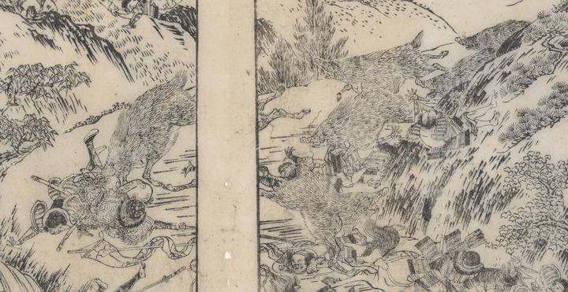

能勢郡の山林で猪が多く現れ、麛阪と思熊を喰殺している。軍勢は甲冑を装着している。
著作者：秋里翁・西村中和／出典：親書誌：U426_nichibunken_0446：本朝年代記圖會／日付：2017／資源識別子：U426_nichibunken_0446_0005_0000
Copyright (c)2010- International Research Center for Japanese Studies, Kyoto, Japan. All rights reserved.